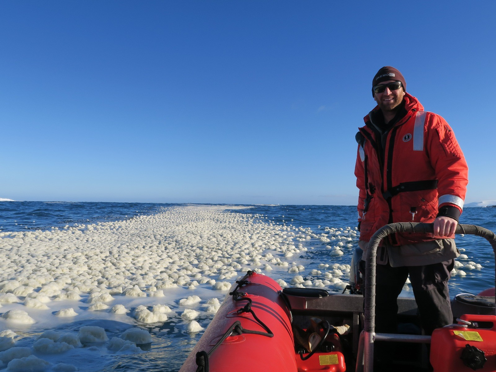

To sustain their large body size, blue whales rely on consuming substantial quantities of small-bodied prey. Their primary prey (i.e., krill), however, is unevenly distributed in the environment and is often aggregated into dynamic, ephemeral patches. How these patches form, how long they persist, and the sensory modalities and environmental cues blue whales use to locate them remains less understood. My research focuses on leveraging novel technologies at the intersection of oceanography, biology and computer science to the predator, prey, and the environment to better understand the sensory adaptations that allow blue whales to find food in a seemingly featureless ocean.
I am a PhD Candidate in the Goldbogen Lab at Hopkins Marine Station of Stanford University.
